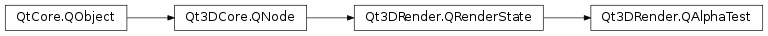

Qt3DRender.QAlphaTest¶
Synopsis¶
Functions¶
- def
alphaFunction() - def
referenceValue()
Slots¶
- def
setAlphaFunction(alphaFunction) - def
setReferenceValue(referenceValue)
Signals¶
- def
alphaFunctionChanged(alphaFunction) - def
referenceValueChanged(referenceValue)
Detailed Description¶
The
QAlphaTestclass specify alpha reference testAs the OpenGL documentation explains; The alpha test discards a fragment conditional on the outcome of a comparison between the incoming fragment’s alpha value and a constant reference value.
-
class
PySide2.Qt3DRender.Qt3DRender.QAlphaTest([parent=nullptr])¶ Parameters: parent – PySide2.Qt3DCore.Qt3DCore::QNode
-
PySide2.Qt3DRender.Qt3DRender.QAlphaTest.AlphaFunction¶ Enumeration for the alpha function values
Constant Description Qt3DRender.QAlphaTest.Never Never pass alpha test Qt3DRender.QAlphaTest.Always Always pass alpha test Qt3DRender.QAlphaTest.Less Pass alpha test if fragment alpha is less than reference value Qt3DRender.QAlphaTest.LessOrEqual Pass alpha test if fragment alpha is less than or equal to reference value Qt3DRender.QAlphaTest.Equal Pass alpha test if fragment alpha is equal to reference value Qt3DRender.QAlphaTest.GreaterOrEqual Pass alpha test if fragment alpha is greater than or equal to reference value Qt3DRender.QAlphaTest.Greater Pass alpha test if fragment alpha is greater than reference value Qt3DRender.QAlphaTest.NotEqual Pass alpha test if fragment alpha is not equal to reference value
-
PySide2.Qt3DRender.Qt3DRender.QAlphaTest.alphaFunction()¶ Return type: PySide2.Qt3DRender.Qt3DRender::QAlphaTest.AlphaFunctionSee also
PySide2.Qt3DRender.Qt3DRender::QAlphaTest.setAlphaFunction()
-
PySide2.Qt3DRender.Qt3DRender.QAlphaTest.alphaFunctionChanged(alphaFunction)¶ Parameters: alphaFunction – PySide2.Qt3DRender.Qt3DRender::QAlphaTest.AlphaFunction
-
PySide2.Qt3DRender.Qt3DRender.QAlphaTest.referenceValue()¶ Return type: PySide2.QtCore.floatSee also
PySide2.Qt3DRender.Qt3DRender::QAlphaTest.setReferenceValue()
-
PySide2.Qt3DRender.Qt3DRender.QAlphaTest.referenceValueChanged(referenceValue)¶ Parameters: referenceValue – PySide2.QtCore.float
-
PySide2.Qt3DRender.Qt3DRender.QAlphaTest.setAlphaFunction(alphaFunction)¶ Parameters: alphaFunction – PySide2.Qt3DRender.Qt3DRender::QAlphaTest.AlphaFunctionSee also
PySide2.Qt3DRender.Qt3DRender::QAlphaTest.alphaFunction()
-
PySide2.Qt3DRender.Qt3DRender.QAlphaTest.setReferenceValue(referenceValue)¶ Parameters: referenceValue – PySide2.QtCore.floatSee also
PySide2.Qt3DRender.Qt3DRender::QAlphaTest.referenceValue()
© 2018 The Qt Company Ltd. Documentation contributions included herein are the copyrights of their respective owners. The documentation provided herein is licensed under the terms of the GNU Free Documentation License version 1.3 as published by the Free Software Foundation. Qt and respective logos are trademarks of The Qt Company Ltd. in Finland and/or other countries worldwide. All other trademarks are property of their respective owners.